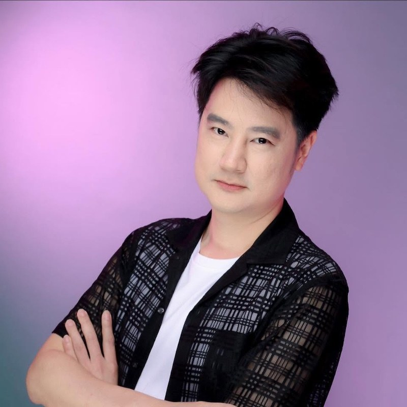
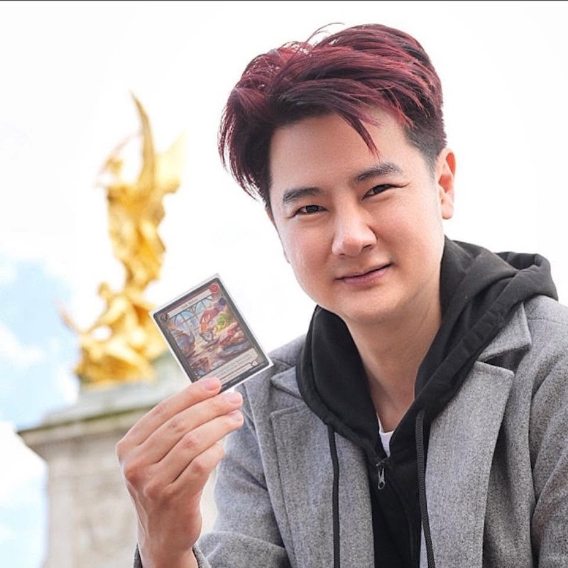

ทีม — นรินทร์ ลีลาภรณ์
คนออกแบบระบบคน ระบบสอน ระบบงาน มา 20 ปี — จาก Diamond Star อายุ 22 สู่คนวางระบบให้องค์กรระดับประเทศ และตอนนี้: ผู้สร้าง myclover
เด็กที่เคยเล่นเกมคนเดียว โตมาสร้างกิลด์ให้ไม่มีใครต้องเล่นคนเดียว — ติดการ์ดเกม กินตามเมีย และเชื่อว่าใครเจอเรา คนนั้นโชคดี
แตะไพ่เพื่อเปิดอีกด้านของผม
— ตอนนี้คุณเห็นด้านทำงานอยู่
— ตอนนี้คุณเห็นด้านชีวิตอยู่
Release Notes ของชีวิต
เด็กสอบ Entrance คณิตศาสตร์ 100 เต็ม ที่ 1 ของประเทศ — เลือกเรียนนิเทศ จุฬาฯ เพราะรู้ว่าตัวเลขเก่งแล้ว แต่คนยังยาก
เริ่มธุรกิจเครือข่ายอายุ 19 — Diamond Star ตอนอายุ 22 มีบทสัมภาษณ์เต็มหน้าในหนังสือพิมพ์วงการปี 2554
ผันตัวเป็นคนสร้างสื่อและระบบของ Clover Group — อยู่เบื้องหลังความสำเร็จของคนนับพันตลอดเกือบสองทศวรรษ
ภาคองค์กร: Training Director Lazada · VP Youpik Thailand (วางระบบปั้นครีเอเตอร์ทั้งแพลตฟอร์ม) · Senior PM Alibaba · ผู้บริหารสายพัฒนาคนอีกหลายองค์กร
ร่วมทุนไทย-จีน ส่งซีรีส์เข้า VIU และ iQIYI · ออกทีวีเรื่อง social commerce · สอน AI, Metaverse และ game thinking ให้นักเรียน-นักศึกษา
ปัจจุบัน: ผู้สร้างชุมชน myclover · ที่ปรึกษาเชิงกลยุทธ์ Clover X · นักศึกษากฎหมาย — เพราะทีมที่ดีต้องปลอดภัยด้วย ไม่ใช่แค่โต
บนโต๊ะของผม
Flesh and Blood สายแข่งจริงจัง — กลยุทธ์บนโต๊ะสอนธุรกิจมากกว่าตำราบางเล่ม
Path of Exile 2 — ชอบเกมที่ระบบลึกจนต้องนั่งวาด skill tree
ภรรยาผมเป็นล่ามญี่ปุ่นสายบันเทิงและนักกินตัวยง — ผมมีหน้าที่ตามไปหิ้วของ
ชอบพาคนเล่นเกมแนว Cashflow — เห็นนิสัยการเงินคนใน 2 ชั่วโมง
เด็กที่ถูกห้ามไม่ให้เพื่อนคบ เลยเล่นเกมคนเดียวทั้งวัน — เกมออนไลน์คือที่แรกที่ผมมีเพื่อน
กิลด์ที่ไม่มีใครต้องเล่นเกมชีวิตคนเดียว — ชื่อมันว่า myclover
อยากรู้จักกันต่อ
หน้านี้สร้างจากไฟล์ HTML ไฟล์เดียว —
อยากมี Smart Resume ของตัวเอง? ผมสอนฟรีใน myclover 🍀
ข้อมูลของคุณ